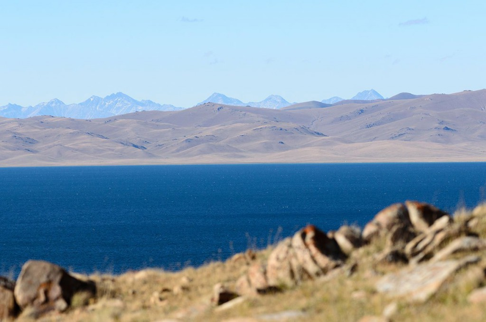
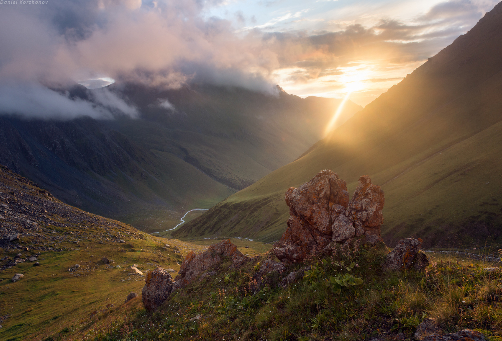
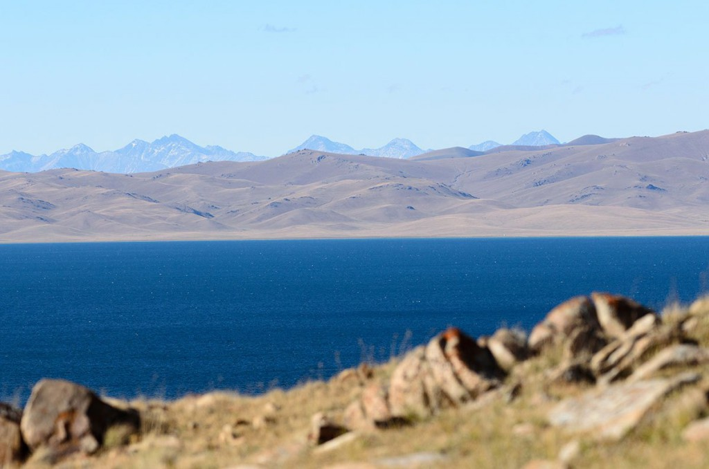
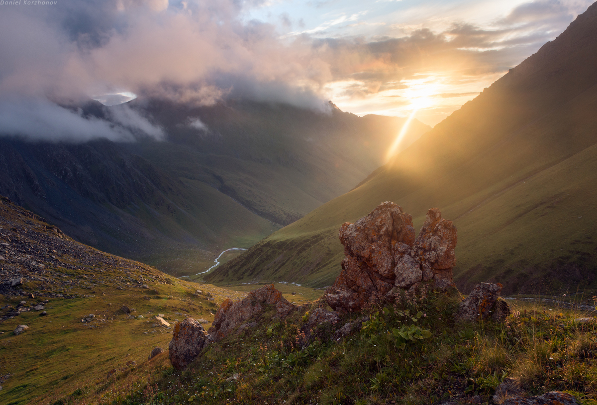

2Бишкек-Сон-Кол
Выезд в Сон-Кол. Сон-Кол — это сказочное высокогорное озеро Тянь-Шаня. Озеро Сон-Куль зажато в котловине между внутренними отрогами Тянь-Шаня в Кыргызстане. Водоем площадью 278 км² расположен между грядами Сонкёльтау и Молдотау, на высоте 3016 м над уровнем моря, в северо-западной части Нарынской области. Цвет водной глади озера Сон-Куль меняется в зависимости от времени суток, становясь то насыщенно синим, то пурпурно-голубым, то сочно зеленым. В водоеме обитают разнообразные виды рыб, среди которых сиг, чир, пелядь, осман, голец. Вокруг озера раскинулись живописные пастбища. Размещение в юртах.Прогулка по побережью,купание,конные прогулки (за дополнительную плату), дегустация национальных блюд и напитков, демонстрация национальных древних игр, как кок-бору (козлодрание) и кыз-куумай (погоня за девушкой). Ночь в юрте.
Кок-бору-— древняя, популярная конная-спортивная игра среди кыргызов, алтайцев, башкир, казахов и других народов Азии. Кок-бору — это симбиоз скачек и игры. Всадники борются за тушу козла — необходимо не только завладеть ею, но и удержать, а затем забросить в «казан» (ворота) команды соперника.
Кыз куумай с тюркских языков переводится как погоня за девушкой. Игра начинается с того, что всадник и его спутница выезжают на скаковую дорожку. Девушка становится на 12 – 15 метров впереди. По сигналу судьи начинается скачка. После того, как она проскочит около 400 метров, стартует всадник. Если всаднику удается догнать девушку, он получает право обнять и поцеловать её на скаку. Однако, в обратную сторону участники стартуют в другом порядке. Теперь всадник получает фору, а девушка должна его догнать. Если это ей удастся, то она вправе бить его плетью.
 


